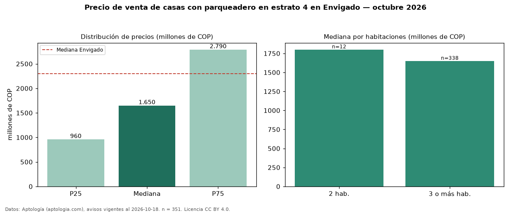

Precio de venta de casas con parqueadero en estrato 4 en Envigado — octubre 2026
Con 351 avisos vigentes, el precio mediano de casas con parqueadero en estrato 4 en venta en Envigado es COP 1,65 mil millones. Eso es 6 % más que la mediana de las casas en estrato 4 en venta de Envigado (COP 1,55 mil millones, n = 415); este segmento reúne el 85 % de esos avisos. Por metro cuadrado, la mediana es COP 6,41 millones/m² (n = 308), 3 % por encima de las casas en estrato 4 en venta de Envigado (COP 6,25 millones/m²). La mitad central de los avisos va de COP 960 millones a COP 2,79 mil millones (razón 2,9), una dispersión alta. El área mediana anunciada es 241 m². El segmento con más oferta es el de 3 o más habitaciones (338 avisos, mediana COP 1,65 mil millones); pasar de 2 habitaciones a 3 o más habitaciones cambia la mediana −8 %. La administración mediana declarada es COP 545.000 al mes (n = 174). La mediana de todas las casas en venta de Envigado es COP 2,30 mil millones (−28 % de diferencia). Datos: Aptología (aptologia.com), CC BY 4.0 — https://www.aptologia.com/venta/envigado. Archivos: PDF, CSV con las cifras y gráfica PNG.

| Avisos únicos | 351 |
|---|---|
| Percentil 25 | COP 960.000.000 |
| Mediana | COP 1.650.000.000 |
| Percentil 75 | COP 2.790.000.000 |
| Mediana por m² | COP 6.412.080 |
Fuente: avisos vigentes de portales inmobiliarios recopilados por Aptología, deduplicados (mínimo 30 avisos únicos por celda). Precios pedidos, no cerrados. Fecha: 2026-10-18.